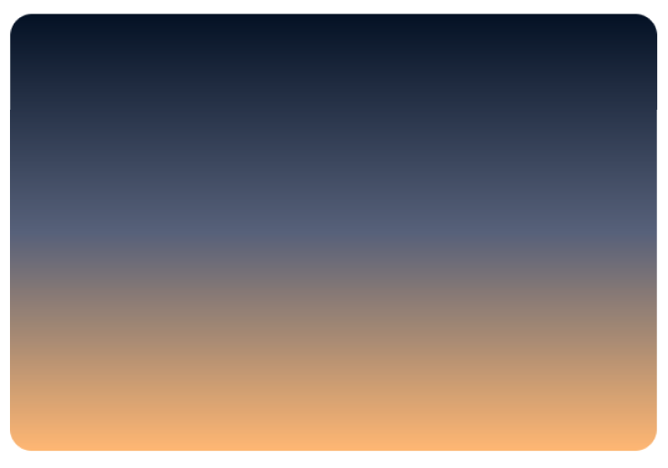
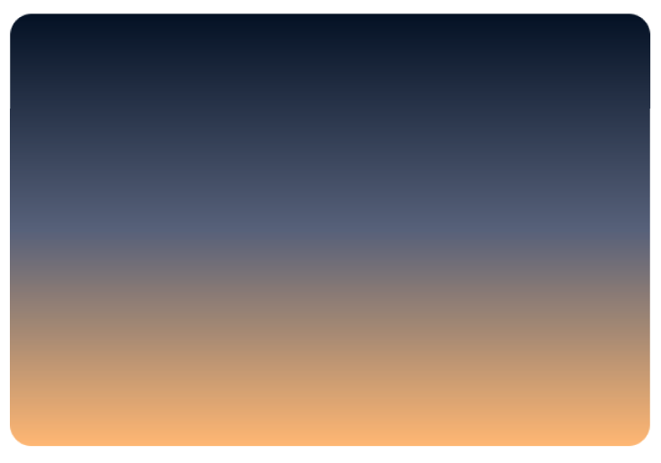

mai 2022 4
the idea is to further develop the pebble-shop idea and realise ideas from figma sketches
thought process
‚Äúcontinue this‚Äù no title or anything needed, just develop this further this is a cool idea üòå
“the nameless”
this there is a 10 day gong that I do form the What’s This Tao All About podcast? http://whatsthistao.com/ ⌘K is for making a link. and there is a ten day gong there and for two minutes I do look at things around me and say that “this is an object it has no name”
at the LCC course we were introduced to a practice of naming things. it is interesting to name things
“the way you can go isn’t the real way. the name you can say isn’t the real name.”

RAKU, Wabi Sabi, pottery, the art of THE STUDIO POTTERY MOVEMENT ‚Äúman if i continue this i will feel blissed out all the time ü•ë‚Äù2021 dec 30 - Draw anything, make atomic design
PORTFOLIO

I chose the designer who codes title because I liked the thoughtbot application title, I adopted it. The idea is to work in atomic projects and not on one masterpiece. I remember at LondonMet Dave was talking about how Picasso would not work on a masterpiece, but have a timeline of work and that it is possible to create in SETS, SEQUENCES and SERIES. So for example (and this can be an atomic project to demonstrate what this means ü¶è)
Idea is to have themes like O'Reilly's illustrations of animals, and perhaps have an animal as theme.

Hello World, list of projects I made are cat-photo-app from freeCodeCamp, calculator from Front-End Masters, blog from Front-End-Masters, drum machine in React

hello world!
Hi, I am Attila
a designer who codes

this idea is to make a JavaScript algorithm that takes a random letter and adds it to the string which is displayed on the screen - character generator
Hiragana
```nuage de pluie```
Kanji
/nuage>üåß

this is a simple webpage and form that I learnt to make at freeCodeCamp
TRANSCRIBING ETSY
the other day I sold two paintings on Etsy for the first time and I very much liked the website’s new design. I didn’t know how I could research and document research for ideas I liked and this is an opportunity that presented itself which I am glad for. I mean pasting this screenshot here. This page in Figma also can be a design and UX thinking can be applied to it. It can be analysed and contextual theorietical thinking can be applied and further developed and it is a digital sketchbook also. Can be.

GRADIENTS
thoughtprocess: I learnt to make this linear gradient in CSS on freeCodeCamp and I noticed that sunsets have similar gradients. So I photographed sky and used the colors with color picker for CSS gradient exercises.
 
